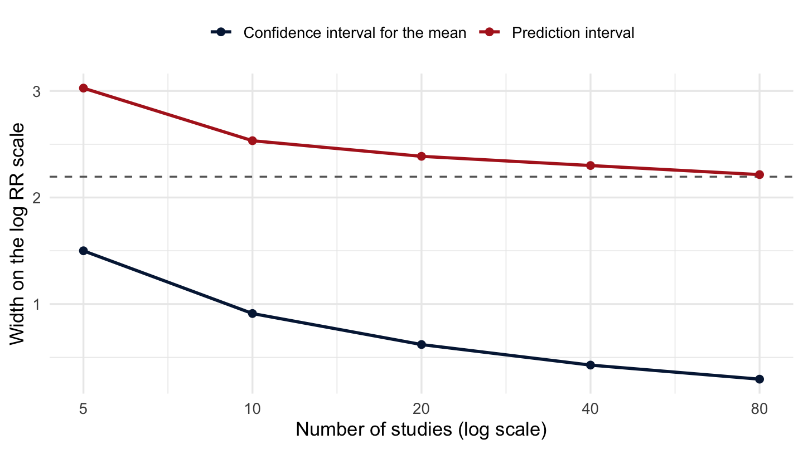

decide whether a set of studies should be combined, and explain why counting “positive” and “negative” studies is not a substitute for pooling;
compute an inverse-variance fixed-effect estimate by hand and explain what it estimates;
state the random-effects model, explain how τ² changes the weights, and choose among τ² estimators;
explain the Hartung-Knapp-Sidik-Jonkman confidence interval and when it can mislead;
report heterogeneity with Q, I², τ² and a prediction interval, and explain what each does and does not measure;
reproduce a published meta-analysis from its data and test how much its conclusion depends on analytic choices;
pool sparse binary data with the Mantel-Haenszel and Peto methods, and explain why trials must never be pooled by adding their 2×2 tables.
R packages:dplyr, tidyr, purrr, ggplot2, metafor, knitr.
Chapter 8 developed the effect measures that are the currency of meta-analysis: for each study, an estimate and its variance. This chapter shows how those estimates are combined. The arithmetic is simple, and metafor::rma() does it in one line. The judgements are not: whether to combine at all, what model to assume, how to estimate the between-study variance, how to build the interval, and how to describe what remains unexplained. Each choice can change the answer, and the second half of the chapter shows by how much, using a published meta-analysis whose conclusion turns out to rest on them.
Every model in this chapter starts from the same decomposition:
The models differ in what they assume about the true effects (one common value, or a distribution of values) and about the sampling error (normal with a known variance, or modelled exactly from the counts).
9.1 Should the studies be combined?
Pooling is a scientific judgement, not a default. The question is not “can these studies be pooled?” (any set of numbers can be averaged) but “what would the pooled estimate estimate, and is that a meaningful quantity?” Before any statistics, compare the studies’ populations, interventions, comparators and outcomes, the PICO elements of Section 3.1 (see also Section 3.1.6). A summary of trials in heart failure with reduced and with preserved ejection fraction, or of placebo-controlled and active-controlled trials, is an average over different questions. If the studies are clinically too different, a stratified analysis or a structured narrative synthesis is more honest than a single number. A statistically significant pooled estimate from clinically incompatible studies is still misleading.
9.1.1 Why vote counting fails
The traditional alternative to pooling is to count how many studies were “positive” (statistically significant) and how many were not. Vote counting discards the direction, size and precision of every estimate, gives every study the same vote whatever its size, and treats “not significant” as “no effect” (1). When the studies are individually underpowered, it reaches the wrong answer, and adding more studies makes it more confidently wrong.
Figure 9.1 simulates 33 trials of a treatment that truly reduces risk by 20% (RR 0.80) in a population with a 10% control risk. The trials are of typical size for many fields, between 100 and 800 patients per arm.
Code
set.seed(629)k <-33p0 <-0.10# control riskrr <-0.80# true risk ration_arm <-round(runif(k, 100, 800)) # patients per armev_c <-rbinom(k, n_arm, p0)ev_t <-rbinom(k, n_arm, p0 * rr)vote <-escalc(measure ="RR", ai = ev_t, n1i = n_arm, ci = ev_c, n2i = n_arm,data =data.frame(trial =1:k, n_arm, ev_t, ev_c))vote <-summary(vote) |># adds ci.lb, ci.ub and the z testmutate(signif = ci.ub <0) # CI excludes 1, in favour of treatmentfit_vote <-rma(yi, vi, data = vote, method ="REML")n_sig <-sum(vote$signif)n_harm <-sum(vote$ci.lb >0)power <-mean(map_lgl(n_arm, \(n) power.prop.test(n = n, p1 = p0, p2 = p0 * rr)$power >0.8))
Figure 9.1: Thirty-three simulated trials of a treatment with a true risk ratio of 0.80. Filled points: confidence interval excludes 1. The diamond is the random-effects pooled estimate.
Only 2 of the 33 trials are statistically significant, and none significantly favours control. A vote count reads this as “conflicting evidence, mostly negative”. Yet the point estimates of 26 trials favour treatment, and the pooled estimate, RR 0.84 (0.78 to 0.91), recovers the true effect with good precision. The “negative” trials are not evidence against the treatment; they are too small to detect it. Here, not one of the trials had 80% power for the true effect. Doubling the number of trials would leave the proportion of significant results about the same, so the vote count would still say “mostly negative”, while the pooled interval would narrow around the truth. Vote counting is not a conservative alternative to meta-analysis but a biased one.
9.2 The fixed-effect model
The fixed-effect (or common-effect) model assumes that every study estimates the same true effect θ, so that all differences between the study estimates \(\hat\theta_i\) are sampling error. The best combination of estimates with variances \(v_i\) is then the inverse-variance weighted mean:
Precise studies have small variances and large weights. The weighted mean is the minimum-variance unbiased combination when the assumption holds, and inverse-variance weighting is the backbone of every model in this chapter: what changes between models is the weight, not the principle.
Study 2 has the smallest standard error and carries more than half the weight. In a forest plot the area of each square is proportional to this weight.
The fixed-effect assumption is plausible when the studies are near-identical replications, and its answer is narrow: the best estimate of the effect in these studies. It is implausible when populations, doses, durations or comparators differ, and it gives no basis for generalising beyond the studies included. metafor calls it the equal-effects model (method = "EE"); the label “fixed effects” (method = "FE") is used for a subtly different model, in which the true effects may differ but inference is confined to their weighted average in the included studies. The point estimates and intervals are identical.
9.3 The random-effects model
The random-effects model lets each study have its own true effect, drawn from a distribution with mean μ and variance τ²:
There are now two sources of variation: the within-study sampling error \(v_i\), and the between-study variance τ² in the true effects. The weights become
\[w_i^* = \frac{1}{v_i + \hat\tau^2},\]
with four consequences:
The interval for μ is wider, because each study is now less informative about the mean.
The weights are more equal. When τ² is large relative to the \(v_i\), every study receives similar weight, and a single large trial no longer dominates. This is not always desirable: small studies are more prone to bias (Chapter 15), and the random-effects model gives them relatively more influence.
The estimand changes.\(\hat\mu\) is the average of a distribution of true effects, not a single true effect. If the trials of a drug enrolled different populations, μ describes the average population studied, which may correspond to no real patient group.
The prediction interval becomes essential, because the spread of true effects, not just the uncertainty in their mean, is now part of the answer (Section 9.4.1).
The choice between the models is a substantive claim about the evidence, not a statistical convenience, and it should be made before seeing the results. When the two give very different answers, usually because small studies differ systematically from large ones, that is a finding to explain rather than a nuisance to resolve by picking one.
9.3.1 Estimating τ²
τ² is not observed and has to be estimated from the scatter of the study estimates, which with a handful of studies is very imprecise. Many estimators exist (2). The oldest and best known, from (3), is a moment estimator built on Cochran’s Q:
If the studies share one effect, Q has expectation \(k - 1\); any excess is attributed to τ², truncated at zero. The estimator is simple and closed-form, but it tends to underestimate τ² when heterogeneity is substantial, which makes intervals for μ too narrow.
Table 9.1: Estimators of the between-study variance τ².
Estimator
metafor
How it works
Properties
DerSimonian-Laird
"DL"
Moment estimator from Q, one step
Simple; underestimates τ² when heterogeneity is large
Hedges
"HE"
Unweighted moment estimator
Unbiased, but imprecise
Paule-Mandel
"PM"
Iterates τ² until the generalised Q equals \(k-1\)
Performs well in simulations
Maximum likelihood
"ML"
Maximises the likelihood
Biased low: ignores that μ is estimated
Restricted ML
"REML"
Maximises a likelihood that allows for estimating μ
Less biased than ML; the metafor default
Empirical Bayes
"EB"
Iterative, closely related to PM
Similar to PM
Sidik-Jonkman
"SJ"
Starts from a crude τ², one step
Overestimates when τ² is small
The ML estimator is biased low for the same reason that a sample variance divided by \(n\) rather than \(n-1\) is: it measures spread around an estimated mean as if it were the true one. REML corrects for this, as DL does through the \(k-1\) in its formula. Simulation studies show no estimator best in all conditions, but favour REML and Paule-Mandel over DL (2,4). DL was for decades the only option in Cochrane’s RevMan software, so most published meta-analyses use it. Since 2024, the Cochrane Handbook recommends REML as the default, and RevMan now uses it (5). metafor’s default has always been REML.
which treats the weights, and therefore \(\hat\tau^2\), as if they were known. With few studies they are not, and the interval is too narrow: its coverage can fall well below 95%. The Hartung-Knapp-Sidik-Jonkman (HKSJ) interval (6,7) makes two changes. It replaces 1.96 by a t quantile with \(k-1\) degrees of freedom (2.78 for five studies, 2.57 for six), and it rescales the variance by how much the studies actually scatter around \(\hat\mu\):
In simulations the HKSJ interval keeps close to its nominal coverage where the Wald interval does not (8). In metafor it is test = "knha", after Knapp and Hartung, who extended it to meta-regression (9); in meta it is method.random.ci = "HK".
The rescaling has a catch. When the studies scatter less than their variances predict, the rescaling factor is below 1, and the HKSJ interval can be narrower than the Wald interval, which is not a sensible correction for uncertainty (10). The usual fix is to use the larger of the two variances, test = "adhoc" in metafor (adhoc.hakn.ci = "se" in meta). Current Cochrane Handbook guidance is to consider HKSJ when \(\hat\tau^2 > 0\) and there are more than two studies, and to check that it is not narrower than the Wald interval (5). With very few studies, two or three, the HKSJ interval can be so wide as to be uninformative, which is an honest statement of how little a few studies say about a variance.
9.4 Quantifying heterogeneity
Four statistics describe heterogeneity. They answer different questions, and no one of them is sufficient. The BCG vaccine trials, whose forest plots were drawn in Section 4.3, are a good illustration: their results are scattered far more widely than sampling error can explain.
Code
bcg <-escalc(measure ="RR", ai = tpos, bi = tneg, ci = cpos, di = cneg,data = dat.bcg, slab =paste(author, year))m_bcg <-rma(yi, vi, data = bcg, method ="REML")ci_het <-confint(m_bcg)$random # Q-profile intervals for tau^2, I^2pr_bcg <-predict(m_bcg, transf = exp)
Table 9.2: Four ways of describing the heterogeneity of the BCG trials (REML; ranges are 95% confidence intervals).
Statistic
BCG trials
What it answers
Limitations
Cochran’s Q
152 on 12 df, P < 0.001
Is there more variation than chance predicts?
A test, not a measure; low power with few studies, too much with many large ones
I²
92% (82 to 98)
What share of the observed variation is between-study rather than sampling error?
Relative: depends on study size as much as on heterogeneity
τ² (τ)
0.31 (τ = 0.56)
How much do the true effects vary, on the scale of the effect measure?
Hard to read on a log scale; imprecise with few studies
Prediction interval
RR 0.15 to 1.55
Where is the true effect in a new setting likely to lie?
Relies on normally distributed true effects; unstable with few studies
Cochran’s Q is a test of the hypothesis that all studies share one effect. Because it has little power when there are few studies, a threshold of P < 0.10 is often used; with many large studies it detects trivial differences. A non-significant Q is not evidence of homogeneity.
I² is the proportion of the total variation in the estimates that is due to between-study variation rather than chance (11). In its original form, \(I^2 = (Q - (k-1))/Q\), truncated at zero; metafor and the current RevMan compute it from \(\hat\tau^2\) instead. I² is the most reported and most misread of the four. It is not an absolute measure of heterogeneity: because sampling error shrinks as studies get larger, the same τ² gives a higher I² in a meta-analysis of large trials than of small ones (12). An I² of 90% can describe heterogeneity too small to matter clinically, and an I² of 30% heterogeneity large enough to reverse a decision. Its confidence interval, rarely reported, is usually wide; for the BCG trials it is 82% to 98% even with 13 trials.
τ² is the variance of the true effects, so τ is their standard deviation on the scale of analysis. For the BCG trials τ = 0.56 on the log RR scale: even if μ were known exactly, 95% of true RRs would lie between about 0.16 and 1.47. Turner and colleagues collected τ² from thousands of Cochrane meta-analyses, which gives a sense of what is typical for different outcomes and comparisons (13); Chapter 13 uses these as prior distributions.
9.4.1 The prediction interval
The prediction interval combines τ² with the uncertainty in \(\hat\mu\) to describe where the true effect in a new study, or a new setting, is likely to lie (14,15):
The t distribution with \(k-2\) degrees of freedom is the convention proposed by (14) and used by the meta package. Software differs: metafor’s predict() uses the normal quantile after a standard (Wald) fit and a t quantile with \(k-1\) degrees of freedom after test = "knha", and RevMan offers both. With few studies the choice matters, and the method should be stated.
For the BCG trials the average effect is clear, RR 0.49 (0.34 to 0.70): BCG roughly halves the risk of tuberculosis on average. The prediction interval, 0.15 to 1.55, says that in a new setting the vaccine could be anything from highly protective to useless. The confidence interval and the prediction interval answer different questions, and they behave differently as evidence accumulates. Figure 9.2 simulates meta-analyses of increasing size from a population of true effects like the BCG trials’.
Code
sim_width <-function(k, tau =0.56, mu =log(0.5)) { se <-runif(k, 0.15, 0.6) yi <-rnorm(k, mu, tau) +rnorm(k, 0, se) fit <-rma(yi, sei = se, method ="REML", test ="knha", control = ctl) p <-predict(fit)c(ci = fit$ci.ub - fit$ci.lb, pi = p$pi.ub - p$pi.lb)}set.seed(2026)widths <-map_dfr(c(5, 10, 20, 40, 80), \(k) { w <-replicate(500, tryCatch(sim_width(k), error = \(e) c(ci =NA, pi =NA))) tibble::tibble(k = k, `Confidence interval for the mean`=median(w["ci", ], na.rm =TRUE),`Prediction interval`=median(w["pi", ], na.rm =TRUE))}) |>pivot_longer(-k, names_to ="interval", values_to ="width")ggplot(widths, aes(k, width, colour = interval)) +geom_hline(yintercept =2*1.96*0.56, linetype ="dashed", colour ="grey40") +geom_line(linewidth =1) +geom_point(size =2) +scale_x_log10(breaks =c(5, 10, 20, 40, 80)) +scale_colour_manual(values =c("#041E42", "#B22222"), name =NULL) +labs(x ="Number of studies (log scale)", y ="Width on the log RR scale") +theme(legend.position ="top")

Figure 9.2: Width of the 95% confidence interval for the mean and of the 95% prediction interval, as studies are added. Simulated trials with true log risk ratios drawn from N(log 0.5, 0.56²) and within-study standard errors of 0.15 to 0.6; median of 500 simulations at each size. The dashed line is the width of the true 95% range of effects.
The confidence interval for the mean narrows roughly as \(1/\sqrt{k}\). The prediction interval narrows at first, as τ² and μ become better estimated, and then levels off at the true spread of effects: more trials like these would pin down the average, but not the effect in any particular setting. “BCG halves the risk of tuberculosis on average” is well supported; “BCG will halve the risk in your population” is not. Chapter 10 asks why the BCG trials differ.
Prediction intervals are not a cure-all. They assume normally distributed true effects, they are unreliable when there are few studies, and the Cochrane Handbook urges caution in reporting them for small meta-analyses (5). But a meta-analysis that reports only the confidence interval for μ, with substantial heterogeneity, describes the average and leaves readers to assume that it applies to them.
9.4.2 Statistical and clinical importance
Neither a significant pooled estimate nor a low I² says whether an effect matters. Figure 9.3 shows five hypothetical results against both the null (RR 1.0) and a minimal clinically important difference (MCID) of a 15% relative reduction (RR 0.85).
Figure 9.3: Five hypothetical risk ratios (95% CI) compared with no effect (RR 1.0) and a minimal clinically important difference (RR 0.85).
A result is statistically significant if its interval excludes 1.0, and clearly clinically important only if the whole interval lies beyond the MCID. Neither implies the other. The same reading applies to a meta-analysis, with one addition: compare the prediction interval, not only the confidence interval, with the MCID. The relation between P values, intervals and decisions is taken up in Chapter 11.
9.5 A published meta-analysis, reproduced
In 1996 JAMA published a meta-analysis of six small randomised trials that added unfractionated heparin to aspirin in unstable angina (16). The primary outcome was myocardial infarction or death during randomised treatment. The authors pooled the trials with a DerSimonian-Laird random-effects model, reported a summary of 0.67 (95% CI 0.44 to 1.02), and concluded that their findings were “consistent with a 33% reduction in risk” and that most patients with unstable angina should receive both drugs.
Code
heparin <- tibble::tribble(~study, ~ev_asa, ~n_asa, ~ev_hep, ~n_hep,"Theroux 1988", 4, 121, 2, 122,"RISC 1990", 7, 189, 3, 210,"Cohen 1990", 1, 32, 0, 37,"Cohen 1994", 9, 109, 4, 105,"Holdright 1994", 40, 131, 42, 154,"Gurfinkel 1995", 7, 73, 4, 70)# escalc() adds 0.5 to all four cells of a trial with a zero cell (Cohen 1990)hep_rr <-escalc(measure ="RR", ai = ev_hep, n1i = n_hep, ci = ev_asa, n2i = n_asa,data = heparin, slab = study)hep_or <-escalc(measure ="OR", ai = ev_hep, n1i = n_hep, ci = ev_asa, n2i = n_asa,data = heparin, slab = study)heparin |>mutate(Aspirin =sprintf("%d/%d (%.1f%%)", ev_asa, n_asa, 100* ev_asa / n_asa),`Aspirin + heparin`=sprintf("%d/%d (%.1f%%)", ev_hep, n_hep, 100* ev_hep / n_hep)) |>select(Trial = study, Aspirin, `Aspirin + heparin`) |>kable(align ="lrr", caption ="Myocardial infarction or death during treatment, from @oler1996.")
Myocardial infarction or death during treatment, from (16).
Trial
Aspirin
Aspirin + heparin
Theroux 1988
4/121 (3.3%)
2/122 (1.6%)
RISC 1990
7/189 (3.7%)
3/210 (1.4%)
Cohen 1990
1/32 (3.1%)
0/37 (0.0%)
Cohen 1994
9/109 (8.3%)
4/105 (3.8%)
Holdright 1994
40/131 (30.5%)
42/154 (27.3%)
Gurfinkel 1995
7/73 (9.6%)
4/70 (5.7%)
9.5.1 What was actually pooled?
The article’s tables label the summary a risk ratio, but its methods say odds ratios were pooled with 0.5 added to zero cells. Reproducing the summary settles which.
Code
dl_rr <-rma(yi, vi, data = hep_rr, method ="DL")dl_or <-rma(yi, vi, data = hep_or, method ="DL")f_ci <- \(m) sprintf("%.2f (%.2f to %.2f)", exp(m$b[1]), exp(m$ci.lb), exp(m$ci.ub))tibble::tibble(Analysis =c("As published", "DerSimonian-Laird, risk ratio","DerSimonian-Laird, odds ratio"),`Summary (95% CI)`=c("0.67 (0.44 to 1.02)", f_ci(dl_rr), f_ci(dl_or))) |>kable()
Analysis
Summary (95% CI)
As published
0.67 (0.44 to 1.02)
DerSimonian-Laird, risk ratio
0.76 (0.56 to 1.05)
DerSimonian-Laird, odds ratio
0.67 (0.45 to 1.01)
The odds ratio reproduces the published result; the risk ratio does not. The summary is an odds ratio labelled as a risk ratio. With control risks up to 30%, the two diverge (Section 8.2.2), and the labelled “33% reduction in risk” is a 33% reduction in the odds. Only by trying to reproduce the analysis does the inconsistency come to light.
9.5.2 How much do the analytic choices matter?
The published analysis made three choices: the odds ratio, the DL estimator of τ², and a Wald interval. Figure 9.4 repeats the analysis with each of the seven estimators of Table 9.1, on both scales, with Wald and HKSJ intervals and a prediction interval.
Code
ests <-c("DL", "HE", "PM", "ML", "REML", "EB", "SJ")fit_one <-function(method, dat) { z <-rma(yi, vi, data = dat, method = method, control = ctl) hk <-rma(yi, vi, data = dat, method = method, test ="adhoc", control = ctl) pk <-predict(hk, transf = exp) tibble::tibble(method, tau2 = z$tau2, est =exp(z$b[1]),wald_lo =exp(z$ci.lb), wald_hi =exp(z$ci.ub),hk_lo =exp(hk$ci.lb), hk_hi =exp(hk$ci.ub),pi_lo = pk$pi.lb, pi_hi = pk$pi.ub)}grid <-bind_rows(map_dfr(ests, fit_one, dat = hep_or) |>mutate(scale ="Odds ratio"),map_dfr(ests, fit_one, dat = hep_rr) |>mutate(scale ="Risk ratio"))g <- \(m, s ="Odds ratio") filter(grid, method == m, scale == s)
Figure 9.4: The heparin meta-analysis repeated with seven estimators of τ², on the odds ratio and risk ratio scales. Thick bar: Wald 95% CI. Thin bar: HKSJ 95% CI (never narrower than Wald). Red: 95% prediction interval. Labels give the estimated τ².
Three things stand out.
Five of seven estimators find τ² = 0 on both scales, including DL, so the published “random-effects” analysis is the fixed-effect analysis. REML and SJ find some heterogeneity (on the odds ratio scale τ² = 0.013 and 0.035). With six small trials, “τ² = 0” means only that the trials cannot detect heterogeneity, not that there is none: the REML confidence interval for τ² runs from 0 to 0.37.
The interval never excludes 1. The published Wald interval, 0.44 to 1.02, already included no effect. With HKSJ intervals the upper limit rises to between 1.15 and 1.18, because with six trials the t multiplier is 2.57 rather than 1.96.
The prediction interval is wide. Under REML on the odds ratio scale it runs from 0.35 to 1.25: a new trial could plausibly show a large reduction in the odds of MI or death, or an increase.
The evidence amounted to 68 events among 655 patients on aspirin and 55 among 698 on aspirin and heparin, a difference of 13 events in more than 1300 patients, with no reduction in mortality, mostly unblinded trials, and a composite outcome in which a small infarction counted as much as a death. Writing about it at the time, I argued that these data were consistent with no additional benefit from heparin, that further trials were needed, and that for lower-risk patients the bleeding risk might outweigh an uncertain benefit. The point is not that the authors were wrong to pool, but that “consistent with a 33% reduction” describes one point in a range of results that is equally consistent with none, and that the range widens with every defensible change to the analysis.
9.6 Methods for binary outcomes
The inverse-variance methods above treat each study’s log odds ratio as normally distributed with a known variance. With small trials and few events, both approximations are poor, and a trial with a zero cell has no finite log odds ratio unless something is added to the cells. Two older methods work directly from the 2×2 tables.
9.6.1 Mantel-Haenszel
For trial \(i\) with \(a_i\) events among \(n_{1i}\) treated patients, \(c_i\) among \(n_{0i}\) controls, and \(b_i\), \(d_i\) the corresponding non-events, the Mantel-Haenszel odds ratio is
Each trial adds its own within-trial products to the numerator and the denominator. Nothing is logged or inverted, so a trial with no events in one arm still contributes (it adds zero to one sum and a positive amount to the other), and a trial with no events in either arm drops out, correctly, because it says nothing about the relative effect. The method has equivalents for the RR and RD, is a fixed-effect method, and performs well with sparse data (17). In metafor it is rma.mh(); in meta, metabin(method = "MH").
9.6.2 Peto
Peto’s one-step method compares the observed events in the treated arm, \(O_i = a_i\), with those expected if treatment had no effect, \(E_i = n_{1i}(a_i + c_i)/n_i\):
where \(V_i\) is the hypergeometric variance of \(O_i\). It handles single zero cells without correction and performs well when events are rare, arms are balanced and the effect is modest. It is biased when the odds ratio is far from 1 or the arms are very unequal in size (17). In metafor it is rma.peto().
Code
iv <-rma(yi, vi, data = hep_or, method ="EE")mh <-rma.mh(measure ="OR", ai = ev_hep, n1i = n_hep, ci = ev_asa, n2i = n_asa, data = heparin)peto <-rma.peto(ai = ev_hep, n1i = n_hep, ci = ev_asa, n2i = n_asa, data = heparin)tibble::tibble(Method =c("Inverse variance (0.5 added to Cohen 1990)", "Mantel-Haenszel", "Peto"),`Odds ratio (95% CI)`=c(f_ci(iv), f_ci(mh), f_ci(peto))) |>kable(caption ="Fixed-effect odds ratio for the heparin trials, three ways.")
Fixed-effect odds ratio for the heparin trials, three ways.
Method
Odds ratio (95% CI)
Inverse variance (0.5 added to Cohen 1990)
0.67 (0.45 to 1.01)
Mantel-Haenszel
0.66 (0.44 to 0.99)
Peto
0.67 (0.45 to 0.99)
The three agree closely here, because events are not very rare, arms are balanced and only one trial has a zero cell. Yet the Mantel-Haenszel and Peto intervals just exclude 1 and the inverse-variance interval just includes it, another reminder that a result this close to the boundary should not be summarised by which side of 0.05 it falls on.
9.6.3 Never add up the tables
A tempting shortcut is to add the events and patients across trials into a single 2×2 table. This breaks randomisation, which guarantees comparable arms only within each trial. When trials differ in their baseline risk and in their allocation ratio, the shortcut produces Simpson’s paradox.
Code
toy <- tibble::tibble(trial =c("A (high risk, 4:1 allocation)", "B (low risk, 1:4 allocation)"),ev_t =c(160, 8), n_t =c(400, 100), ev_c =c(50, 40), n_c =c(100, 400))toy_or <-escalc(measure ="OR", ai = ev_t, n1i = n_t, ci = ev_c, n2i = n_c, data = toy)odds <- \(e, n) e / (n - e)added <-with(toy, odds(sum(ev_t), sum(n_t)) /odds(sum(ev_c), sum(n_c)))mh_toy <-rma.mh(measure ="OR", ai = ev_t, n1i = n_t, ci = ev_c, n2i = n_c, data = toy)tibble::tibble(Analysis =c(toy$trial, "Both trials added into one table", "Mantel-Haenszel, by trial"),`Odds ratio`=sprintf("%.2f", c(exp(toy_or$yi), added, exp(mh_toy$b[1])))) |>kable(align ="lr")
Analysis
Odds ratio
A (high risk, 4:1 allocation)
0.67
B (low risk, 1:4 allocation)
0.78
Both trials added into one table
2.31
Mantel-Haenszel, by trial
0.69
Both trials show benefit, but the added table shows harm, because most treated patients come from the high-risk trial and most controls from the low-risk one. The comparison across trials is confounded by trial. Stratifying by trial, as Mantel-Haenszel and every other method in this chapter does, recovers the benefit. The same error appeared in a published meta-analysis of male circumcision and HIV infection (Section 6.4), and Chapter 10 shows a subtler version of the paradox that affects meta-regression.
9.6.4 Zero cells and rare events
Safety outcomes are often rare, and many trials record no events at all in one or both arms. The options are:
A continuity correction, conventionally 0.5 added to every cell of a trial with a zero. Simple, but arbitrary, and it biases the estimate towards no effect, more so when the arms are unbalanced. Alternatives that scale the correction to the size of the opposite arm perform better (18).
Mantel-Haenszel or Peto, which need no correction for single-zero trials. Both drop trials with no events in either arm.
Exact or likelihood-based methods that model the counts with binomial or hypergeometric distributions, including logistic random-effects models (rma.glmm() in metafor).
Bayesian models, which model the counts directly and can keep double-zero trials (Chapter 13).
The choice can matter. In 2007 Nissen and Wolski pooled 42 trials of rosiglitazone with Peto’s method and found an increased risk of myocardial infarction, OR 1.43 (95% CI 1.03 to 1.98), P = 0.03 (19). Many trials had no infarctions in either arm and so contributed nothing. Reanalyses of the same trials with other methods and other handling of the zero-event trials gave estimates that were often no longer statistically significant (20). The result shaped regulatory action on both sides of the Atlantic, and the controversy was partly about statistical method rather than data. For rare events, report how zero cells were handled and show that the conclusion survives other reasonable choices.
9.7 A first look at Bayesian meta-analysis
The random-effects model has a natural Bayesian form: the same structure, with prior distributions placed on μ and τ, updated by the data into posterior distributions. Two features make it attractive for meta-analysis. First, τ is poorly estimated from a few studies, and an informed prior, such as the empirical distributions of (13), stabilises it and carries its uncertainty through to the estimate of μ, which the frequentist plug-in approach ignores. Second, the posterior answers questions that clinicians actually ask, such as the probability that the treatment reduces risk by more than the MCID. Chapter 12 fits a first Bayesian model to a real example, and Chapter 13 develops the approach.
Table 9.3: Three models for meta-analysis.
Fixed effect
Random effects
Bayesian random effects
True effects
One common θ
Distribution N(μ, τ²)
Distribution N(μ, τ²)
τ²
Assumed zero
Estimated, then treated as known
Prior combined with data; uncertainty propagated
Weights
\(1/v_i\)
\(1/(v_i + \hat\tau^2)\)
Implicit in the posterior
Summary
Common effect θ
Mean effect μ
Posterior distribution of μ
Effect in a new setting
Not addressed
Prediction interval
Posterior predictive distribution
Sparse data
Mantel-Haenszel, Peto
Continuity corrections, GLMMs
Binomial likelihood; no corrections needed
Prior information
None
None
Explicit, and open to sensitivity analysis
Key points
Decide whether to pool on clinical grounds first. Vote counting is not an alternative: it confuses “not significant” with “no effect” and becomes more wrong as underpowered studies accumulate.
Every standard method is an inverse-variance weighted mean; the fixed-effect and random-effects models differ in the weights and in what the summary estimates.
The random-effects mean is the average of a distribution of true effects. Estimate τ² with REML or Paule-Mandel rather than DerSimonian-Laird, and recognise that with few studies every estimate of τ² is imprecise.
With few studies, the Wald interval for μ is too narrow; use the HKSJ interval, guarded so that it is never narrower than Wald, and report the choice.
Report Q, I², τ² and a prediction interval. I² is relative, not an absolute measure of heterogeneity; the prediction interval is the most clinically meaningful.
Reproduce before you trust: the heparin meta-analysis pooled odds ratios labelled as risk ratios, and its conclusion depended on choices that no one would notice from the abstract.
For sparse binary data, use Mantel-Haenszel or likelihood-based methods, show sensitivity to the handling of zero cells, and never pool by adding 2×2 tables.
Exercises
Rerun vote-sim with 330 trials instead of 33. What proportion are significant? What happens to the pooled interval?
Compute \(\hat\tau^2_{DL}\) for the BCG trials by hand from Q and the fixed-effect weights, and check it against rma(method = "DL").
For the BCG trials, compare the Wald and HKSJ intervals and the prediction intervals from metafor’s predict() with one built by hand with \(t_{k-2}\). How different are they with 13 trials? Repeat with the first five trials only.
In the heparin analysis, remove Holdright 1994, the largest trial. How do the summary, τ² and the prediction interval change under DL and REML?
Construct a pair of trials, like simpson-toy, in which both trials show harm but the added table shows benefit.
Fit rma.glmm(measure = "OR", model = "UM.FS") to the heparin trials. How does it compare with the inverse-variance and Mantel-Haenszel results?
Further reading
(5): Chapter 10 of the Cochrane Handbook, updated in 2024 with the REML, HKSJ and prediction interval recommendations.
(21), Chapters 11 to 16, for a clear account of fixed and random effects and of heterogeneity.
(2) and (4) on estimators of τ²; (8) and (10) on the HKSJ interval.
(14) on the interpretation of random-effects meta-analysis and prediction intervals; (12) on the limits of I².
(17) and (18) on methods for rare events and zero cells.
IntHout J, Ioannidis JPA, Borm GF. The Hartung-Knapp-Sidik-Jonkman method for random effects meta-analysis is straightforward and considerably outperforms the standard DerSimonian-Laird method. BMC Medical Research Methodology [Internet]. 2014;14:25. Available from: https://pmc.ncbi.nlm.nih.gov/articles/PMC4015721/
Rücker G, Schwarzer G, Carpenter JR, Schumacher M. Undue reliance on \(I^2\) in assessing heterogeneity may mislead. BMC Medical Research Methodology [Internet]. 2008;8:79. Available from: https://pmc.ncbi.nlm.nih.gov/articles/PMC2648991/